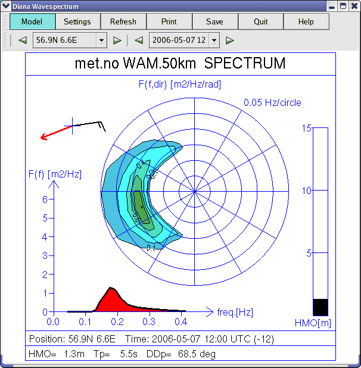

When wave spectrum is selected a new window appears showing wave
spectra. All the positions are marked on the map with a blue anchor,
select a position by clicking the map or directly from the spectrum window,
the selected station changes to red/white on the map. Time can be set by
either changing the time in the main window or in the spectrum window.
Station and time can be selected in three different ways:
By clicking station name/time and selecting from the list.
By clicking on the arrows to the left and right of station name/time.
The next/previous station/time in the list will be selected.
By using the arrow keys (up/down) for station and (right/left) for
time. The next/previous station/time will be selected in the list.

From the spectrum window, the following options are also available:
Model Selects model.
Settings For changing sizes in the diagram, colour, line width
and line type where applicable. The new settings are show in the
diagram when Apply is clicked. To return to the original
settings, select Standard.
Update Updates the positions in the main window and list,
changes the time to the same as in the main window, if possible.
 Wave spectrum
Wave spectrum